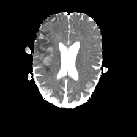
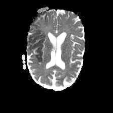
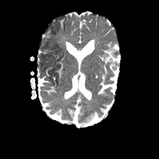
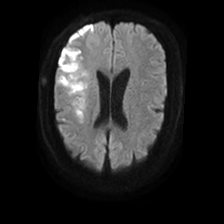
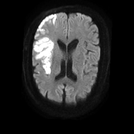
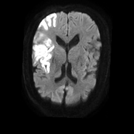
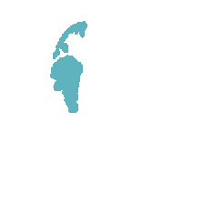

3 DWI + 3 ADC
, slice bertetangga
6 × 192 × 192
U-Net
2.5D
encoder
mengenali lesinya
decoder
kembali ke 192 × 192
skip connection
menjaga tepi lesi

peta lesi
per piksel
pembanding setelah mahasiswa submit
0,738
Dice · 36 kasus uji
Modul visi
U-Net 2.5D